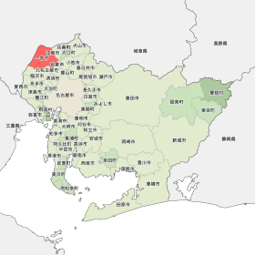
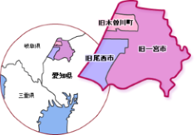
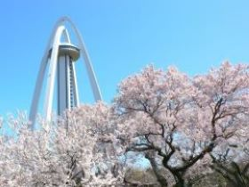
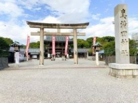
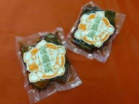
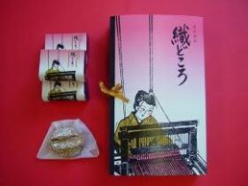
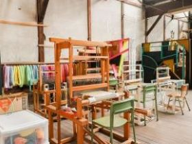

一宮市
一宮市について
一宮市は、愛知県北西部に位置する人口37万人の都市で、産業は毛織物、農業はナス、ハクサイなどが有名です。また、一宮七夕祭りや、真清田神社などの伝統的な文化も強く根ずいています。
歴史
一宮市は平成17年4月1日、一宮市・尾西市・木曽川町が合併し、誕生しました。繊維産業を基盤として栄えており、近年では地場産生地「尾州」のブランド力強化を進めると同時に、企業誘致の推進により産業の複合化を図っています。
観光地
観光地は、一宮市のシンボルともいえる、雄大な自然を一望することができる高さ138mの展望台「ツインアーチ138」や、伊勢神宮におまつりされている神様の孫が祀られている「真清田神社」などがあります。
 名物料理
名物料理は、一口大にした大根、蓮根、人参、茄子、胡瓜を溜醤油を使用した特製のたれで漬け込んだ「宮蔵漬」や、織物の産地に由来して、織機のサスを型取り、あっさり風味の桂皮入り生地に黄味あんを包んだ焼き菓子である「織どころ」などがあります。
 アクセス
イベント
一宮市は、仙台・平塚の七夕まつりとならび日本三大七夕まつりの一つとして称賛され、毎年100万人を超える人出でにぎわう「一宮七夕祭り」が有名です。御衣奉献大行列やワッショーいちのみや、コスプレパレード、盆踊り大会を開催し、開催中の4日間を大いに盛り上げます。
一宮七夕祭りの様子
文化
一宮市には、運気上昇のパワースポットとして話題の真清田神社があり、また、幕末の開港ごろから織物が盛んになり、今の木曽川町などでは明治時代初頭から染め分けた糸と地糸で布地に模様を織り出す絣織物が広がり、現在は毛織物が有名です。
